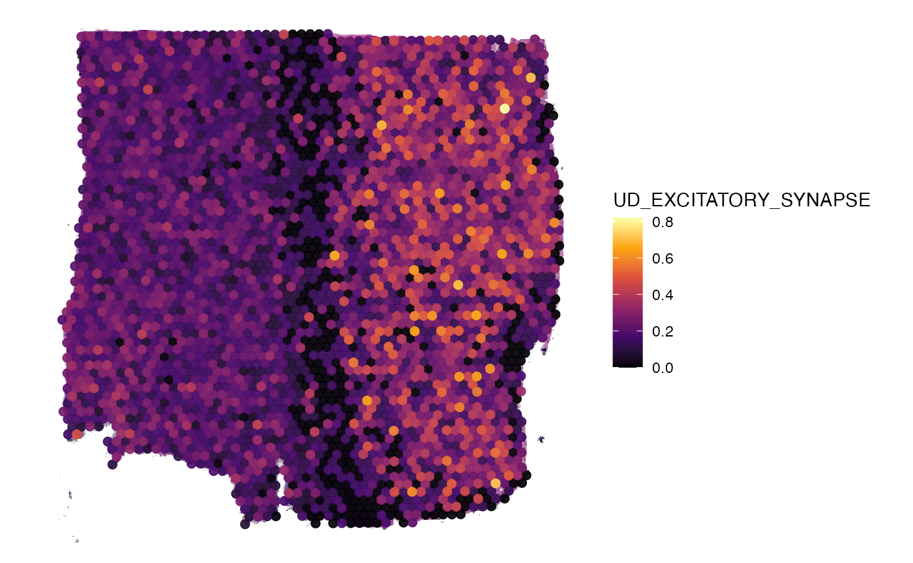
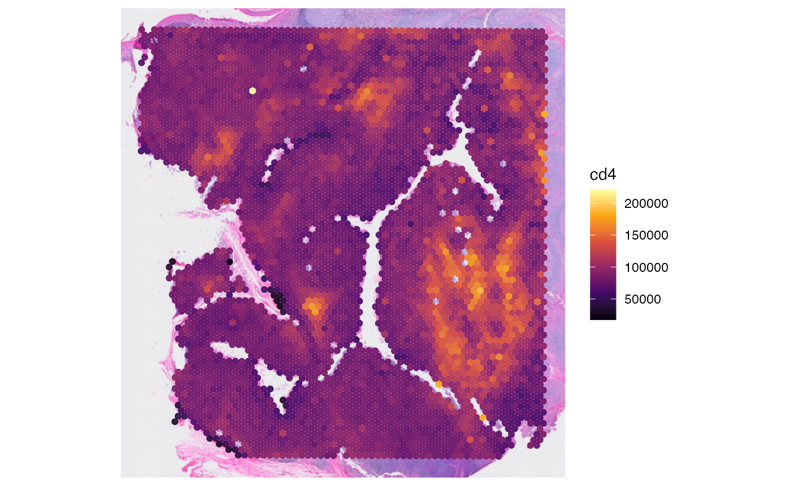

Molecular Variables
molecular-variables.Rmd1. Introduction
# load required packages
library(SPATA2)
library(tidyverse)
# load SPATA2 inbuilt example data
object_t269 <- loadExampleObject("UKF269T", process = TRUE)
show(object_t269)
show(object_t269)## An object of class SPATA2
## Sample: UKF269T_diet
## Size: 3213 x 15000 (spots x molecules)
## Memory: 192.59 Mb
## Platform: VisiumSmall
## Molecular assays (1):
## 1. Assay
## Molecular modality: gene
## Distinct molecules: 15000
## Matrices (2):
## -counts
## -LogNormalize (active)
## Registered images (1):
## - lowres (582x600 px, active, loaded)
## Meta variables (6): sample, sp_outlier, tissue_section, n_counts_gene, n_distinct_gene, avg_cpm_gene
## Spatial Trajectories: horizontal_midMolecular variables are those that are directly linked to molecular
expression data of the SPATA2 object, like gene expression
or gene sets. The concept of genes and gene sets has been embedded in a
broader framework of molecular data since spatial multi-omic studies do
not only include gene expression but also proteins or metabolites.
Developed initially for the Visium platform, which focuses on spatial
gene expression, SPATA2 aims to evolve to support the analysis of
various molecular data types. Hence, we introduce the term molecular
modalities to refer to the different types of molecular data that can be
analyzed within the SPATA2 package.
In SPATA2, the concept of molecular modalities is crucial as it ensures that specific functions and analyses are applied correctly based on the type of molecular data. While you can always specifiy your own modality, the package recognizes three primary molecular modalities:
-
Gene expression: Represented by
modality = 'gene'. This modality deals with the spatial distribution and analysis of mRNA transcripts. -
Protein expression: Represented by
modality = 'protein'. This modality focuses on the spatial distribution and analysis of protein expression data. -
Metabolites expression: Represented by
modality = 'metabolite'. This modality is concerned with the spatial distribution and analysis of metabolite data.
These modalities are essential for performing specific functions as well as dealing with molecular signatures - sets of molecules (such as genes or proteins) that are associated with specific biological states, processes, or conditions. This tutorial guides you through how to work with SPATA2 functions that adress this concept.
2. Molecule names
Whether you are analyzing transcriptomic, proteomic or metabolomic
data your assays will feature counts of molecules (mRNA transcripts,
proteins or metabolites). The names of these molecules that are stored
in the molecular assays of your SPATA2 object can be
extracted as character vectors using either getMolecules()
with the argument assay_name specified (defaults to the
active assay, not relevant if there exists only one assay in the object)
or with “wrapper-functions” getGenes(),
getProteins() and getMetabolites() depending
on the molecular modality of the assay(s) in your SPATA2
object.
# contains only one assay (molecular modality: gene)
getAssayNames(object_t269)## [1] "gene"
activeAssay(object_t269)## [1] "gene"## chr [1:15000] "AL669831.5" "FAM87B" "FAM41C" "AL645608.1" "KLHL17" "PERM1" ...
# getMolecules() works, too
genes <- getMolecules(object_t269, assay_name = "gene")
str(genes)## chr [1:15000] "AL669831.5" "FAM87B" "FAM41C" "AL645608.1" "KLHL17" "PERM1" ...Using getProteins() on a SPATA2 object that
does not contain an assay of molecular modality protein will
fail.
containsModality(object_t269, modality = "protein")## [1] FALSE
tryCatch(
expr = { getProteins(object_t269) },
error = function(error){ message(error$message)}
)## error in evaluating the argument 'object' in selecting a method for function 'getCountMatrix': This SPATA2 object does not contain an assay of molecular modality 'protein'.Since we only have gene expression data stored in the example object,
we can stick to the getGenes() wrapper. Note, that you can
not only use this function to extract the rownames of the count matrix
of the respective assay. You can also use it to subset the genes by
molecular signatures (see section on molecular signatures for more
information).
## using signatures argument
# character vector of molecules of specific signatures (simplify defaults to TRUE)
synapse_genes <- getGenes(object_t269, signatures = "CC.GO_SYNAPSE")
str(synapse_genes)## chr [1:744] "CDH2" "GJC1" "CDH8" "CDH9" "CDH10" "GPC6" "USH1C" "CDH11" ...
plotSurfaceComparison(object_t269, color_by = tail(synapse_genes, 9))
# list of gene sets
tcr_gs <- c("RCTM_TCR_SIGNALING", "RCTM_DOWNSTREAM_TCR_SIGNALING")
# simplify = TRUE (default) merges the output to a character vector of unique names
tcr_genes_vec <- getGenes(object_t269, signatures = tcr_gs, simplify = TRUE)
str(tcr_genes_vec)## chr [1:101] "PSMB1" "CD4" "WAS" "PSMA4" "LCP2" "TAB2" "UBE2D1" "PAG1" ...
# simplify = FALSE returns a list
tcr_genes_lst <- getGenes(object_t269, signatures = tcr_gs, simplify = FALSE)
str(tcr_genes_lst)## List of 2
## $ RCTM_TCR_SIGNALING : chr [1:58] "PSMB1" "CD4" "WAS" "PSMA4" ...
## $ RCTM_DOWNSTREAM_TCR_SIGNALING: chr [1:43] "PSMB1" "CD4" "PSMA4" "TAB2" ...
lapply(tcr_genes_lst, head)## $RCTM_TCR_SIGNALING
## [1] "PSMB1" "CD4" "WAS" "PSMA4" "LCP2" "TAB2"
##
## $RCTM_DOWNSTREAM_TCR_SIGNALING
## [1] "PSMB1" "CD4" "PSMA4" "TAB2" "UBE2D1" "PSME1"The same concept applies to members of the
getMolecules() family of functions:
getMetabolites() and getProteins().
3. Molecular signatures
In SPATA2, a molecular signature is represented as a vector in a
named list, where the character values are the molecules of which the
signature consists. Included in the package is a list named
signatures, with corresponding slots
signatures$gene, signatures$protein, and
signatures$metabolite. This list is where default
signatures are stored for the respective data modality. Depending on how
the SPATA2 object is initiated, the created molecular
assays already contain the respective signatures in the
signatures slot. The scores of the signatures are computed
upon extraction or upon usage for computation and visualization using
the active data matrix of the respective assay.
3.1 Extract molecular signature names
To obtain the names of the signatures that are currently stored, use
getSignatureNames() or it’s wrappers:
getGeneSets(), getProteinSets() and
getMetaboliteSets() depending on the molecular modality of
interest.
## extraction
# opt 1
all_signatures <- getSignatureNames(object_t269, assay_name = "gene")
str(all_signatures)## chr [1:11654] "BC_41BB_PATHWAY" "BC_ACE2_PATHWAY" ...
# whether you specify assay_name or not does not make a difference since
# the object only contains one assay
hallmark_signatures <- getSignatureNames(object_t269, class = "HM")
str(hallmark_signatures)## chr [1:50] "HM_ADIPOGENESIS" "HM_ALLOGRAFT_REJECTION" ...The code chunk above exemplifies how you can subset the extracted signatures by class. In SPATA2, a signature name consists of two parts:
class _ biological function
For instance, the gene set HM_HYPOXIA is of class
HM (short for Hallmark) and contains genes associated with
increased presence of or response to hypoxic circumstances. The class
indicates the source from where the signature derives and is separated
from the biological function part with the first
_. Underscores afterwards are ignored and interpreted as
part of the biological function, as in RCTM_TCR_SIGNALING
(class: RCTM; biological function: TCR_SIGNALING).
3.2 Add molecular signatures
To add a molecular signature, or gene set, to a SPATA2
object (for example, the UKF269T object with its gene
expression assay), you can use the addSignature() or its
modality specific functions like addGeneSet(). The
class argument defaults to ‘UD’ (short for user
defined), indicating that the signature was added by the user. While in
this example the class argument is explicitly specified, it
is not necessary to do so, since it is the default. You can provide
different input for this argument if you want to categorize your
individually added molecular signatures into different classes for
easier extraction and organization.
# example genes of an hypothetical gene signature (gene set)
genes <-
c('CYFIP1', 'SLC16A3', 'AKAP5', 'ADCY8', 'CALB2', 'GRIN1', 'NLGN4X', 'NLGN1',
'ITGA3', 'NLGN4Y', 'ELFN1', 'BSN', 'CNTN6', 'PDE4B', 'DGKI', 'LRRTM2', 'LRRTM1',
'SRPX2', 'SHANK1', 'SLC17A7')
# both, opt1 and opt2, have the same effect (addSignature() just allows to specify the
# assay of interest, which is fixed to 'gene' for addGeneSet()).
# opt1
object_t269 <- addSignature(object_t269, class = "UD", name = "EXCITATORY_SYNAPSE", molecules = genes)
# opt2
# object <- addGeneSet(object, name = "EXCITATORY_SYNAPSE", class = "HM", genes = genes)
gs <- "UD_EXCITATORY_SYNAPSE"
# extract genes of signature
getGenes(object_t269, signatures = gs)## [1] "CYFIP1" "SLC16A3" "AKAP5" "ADCY8" "CALB2" "GRIN1" "NLGN4X"
## [8] "NLGN1" "ITGA3" "NLGN4Y" "ELFN1" "BSN" "CNTN6" "PDE4B"
## [15] "DGKI" "LRRTM2" "LRRTM1" "SRPX2" "SHANK1" "SLC17A7"
# visualize signature expression
plotSurface(object_t269, color_by = gs)
3.3 Signature content
Note that there is a difference between the two ways to obtain
molecule names of specific signatures. The function
getGenes() primarily refers to the gene names in the count
matrix. It extracts all gene names and then subsets them based on the
input for the signatures argument, if provided. This method
is useful when you need to work with the actual genes present in your
count matrix. The function getGeneSet() extracts the genes
of a gene set directly. This is particularly important if the gene set
of interest contains genes that are not found in the count matrix
because they were removed during processing or did not exist in the
count matrix in the first place.
# extracts genes for which data exist in the SPATA2 object
# that are part of the HM_HYPOXIA gene set
genes_from_mtr <- getGenes(object_t269, signature = "HM_HYPOXIA")
str(genes_from_mtr)## chr [1:121] "GBE1" "ENO2" "HK2" "SLC2A1" "P4HA1" "ADM" "P4HA2" "PFKFB3" ...
# extracts all gene names that make up the HM_HYPOXIA gene set
# regardless of whether data (counts) exist
genes_directly <- getGeneSet(object_t269, "HM_HYPOXIA")
str(genes_directly)## chr [1:188] "PGK1" "PDK1" "GBE1" "PFKL" "ALDOA" "ENO2" "PGM1" "NDRG1" ...Note, that genes_directly contains more genes, because
it also includes genes that are not present in the data set.
4. Multiple assays
As an example we can download a SPATA2 object hat has been created with a dataset that contains both gene- and protein expression.
library(SPATAData)
object <- downloadSpataObject("HumanTonsilGP")
object <- readRDS("data/object_protein_and_gene.RDS")The assays are of modality gene and protein.
show(object)## An object of class SPATA2
## Sample: HumanTonsilGP
## Size: 4194 x 18119 (spots x molecules)
## Memory: 562.98 Mb
## Platform: VisiumSmall
## Molecular assays (2):
## 1. Assay
## Molecular modality: gene
## Distinct molecules: 18085
## Matrices (1):
## -counts (active)
## 2. Assay
## Molecular modality: protein
## Distinct molecules: 34
## Matrices (1):
## -counts (active)
## Registered images (2):
## - hires (2000x1634 px, loaded)
## - lowres (600x490 px, active, loaded)
## Meta variables (2): sample, tissue_sectionNote that gene names and protein names can be equal. For SPATA2 to
differentiate between them they must be named differently. When created
with initiateSpataObjectVisium(), protein names are forced
into lower case.
proteins <- getProteins(object)
str(proteins)## chr [1:34] "cd163" "cr2" "pcna" "vim" "krt5" "cd68" "ceacam8" "ptprc" ...## chr [1:18085] "SAMD11" "NOC2L" "KLHL17" "PLEKHN1" "PERM1" "HES4" "ISG15" ...This allows to refer to either gene or protein more conveniently and unambiguously.
# plot left - gene
plotSurface(object, color_by = "cd4")
# plot right - protein
plotSurface(object, color_by = "CD4")
If you want to extract data matrices, you can rely on the
activeAssay() system. Alternatively, you can always specify
the assay of interest with the argument assay_name.
# currently gene
activeAssay(object)## [1] "gene"
# gene counts
gcount_mtr <- getCountMatrix(object)
str(gcount_mtr)## Formal class 'dgCMatrix' [package "Matrix"] with 6 slots
## ..@ i : int [1:34215510] 11 12 16 17 19 20 21 23 25 26 ...
## ..@ p : int [1:4195] 0 8790 17541 24451 32174 40302 49340 57399 66681 74474 ...
## ..@ Dim : int [1:2] 18085 4194
## ..@ Dimnames:List of 2
## .. ..$ : chr [1:18085] "SAMD11" "NOC2L" "KLHL17" "PLEKHN1" ...
## .. ..$ : chr [1:4194] "AACACGTGCATCGCAC-1" "AACACTTGGCAAGGAA-1" "AACAGGAAGAGCATAG-1" "AACAGGATTCATAGTT-1" ...
## ..@ x : num [1:34215510] 1 1 1 1 1 4 4 3 3 18 ...
## ..@ factors : list()
# protein counts
pcount_mtr <- getCountMatrix(object, assay_name = "protein")
str(pcount_mtr)## Formal class 'dgCMatrix' [package "Matrix"] with 6 slots
## ..@ i : int [1:142550] 0 1 2 3 4 5 6 7 8 9 ...
## ..@ p : int [1:4195] 0 34 68 102 136 170 204 238 272 306 ...
## ..@ Dim : int [1:2] 34 4194
## ..@ Dimnames:List of 2
## .. ..$ : chr [1:34] "cd163" "cr2" "pcna" "vim" ...
## .. ..$ : chr [1:4194] "AACACGTGCATCGCAC-1" "AACACTTGGCAAGGAA-1" "AACAGGAAGAGCATAG-1" "AACAGGATTCATAGTT-1" ...
## ..@ x : num [1:142550] 19675 35856 57685 48611 4606 ...
## ..@ factors : list()